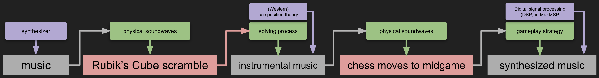
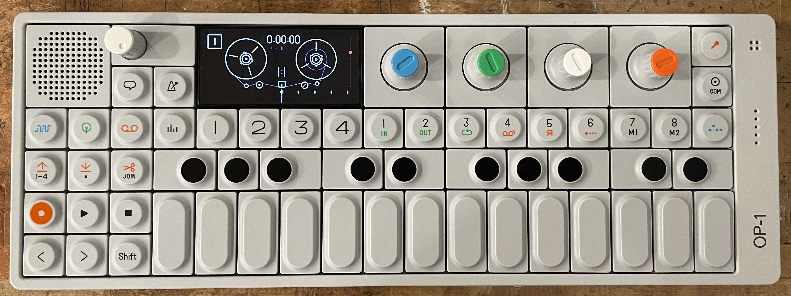
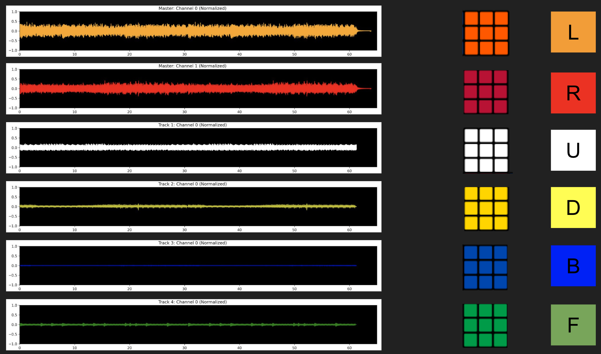
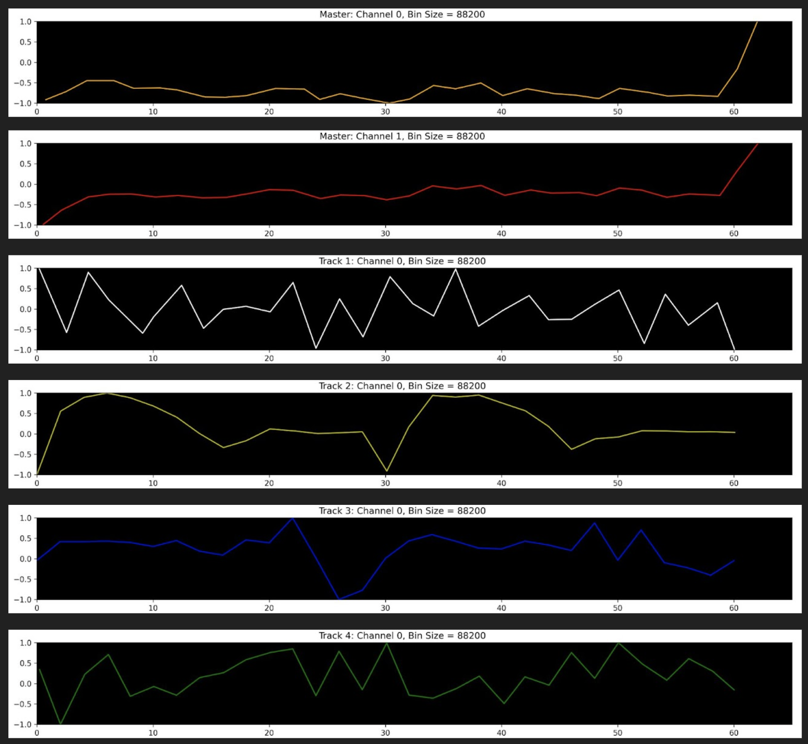
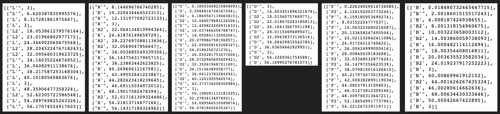

Contents
- Overview
- Project 1: OP-1 Music
- Project 2/7: OP-1 Music --> Rubik's Cube Scramble (PHYSICAL)
- Project 3: Rubik's Cube Solve --> Instrumental Music (COGNITION)
- Project 4: Instrumental Music --> Chess Midgame (PHYSICAL)
- Project 5/6: Chess Playthrough --> DSP Music with MaxMSP (COGNITION)
- Blog Reflection
Overview
These prototypes explore the flattening of information that occurs in the creation of sound and in other cognitive processes that combine "pure" thought with physical manipulation.
There are many theories, structures, and ideas that go into the making of sounds using various techniques. However, when these sounds are physically heard, the cognitive process of creation is flattened into a single sonic experience. Similar loss of information occurs with Rubik's Cubes and with chess. The external physical movements of Rubik's Cube faces omit the pattern recognition and problem-solving that go into finding a solution, and the external physical movements of chess pieces around the board omit the strategy and future-thinking that go into playing chess.
During this week, I used different methods of creating sound to explore a cycle of sonification and reverse sonification with Rubik's Cubes and chess. I turned purely physical aspects of sound into Rubik's Cube or chess positions, and then turned the cognitive processes of Rubik's cube solving or chess-playing back into sound.
The initial goal was to externalize cognition through sound, to make thought processes known instead of flattened. However, these experiments showed that to properly externalize cognition requires more than just sonification: the addition of spatial and visual elements would likely be more successful, especially with these particular cognitive processes (creating sound, solving Rubik's cubes, playing chess) that combine "pure" thought with physical manipulation.
Project 1: OP-1 Music
Goal: make a simple track using the OP-1 synthesizer, borrowed from Yoshe.
Result:
Process: I referenced the OP-1 manual to learn the basics of using the machine.
Reflection: The synthesizer interface was very intuitive, but the process itself of making and layering loops is quite different from how I usually approach creating music. It's very easy to lose sound settings, and it's difficult to undo recorded tracks without deleting everything. This built-in "flattening" of information is part of the charm of the synthesizer, which is stylized after old-timey tape recorders. Tracks made on the OP-1 aren't "meant" to be replicated in the same way as composing sheet music, but it would be interesting to see if this ephemerality could be captured with some sort of notation, especially for teaching new users.
Future Explorations: This synthesizer occupies a very interesting spot in terms of accessibility: it is easier to understand than any other physical synthesizer I've ever used, yet its price ($1299) puts it out of reach for any synth beginners. Given another few days, I'd like to explore possible notations that might bring the synth's usability to a wider audience, especially for teaching the basics of synthesizers and loop-based composition.
Back to Top
Project 2/7: OP-1 Music --> Rubik's Cube Scramble (PHYSICAL)
Goal: Use purely physical elements of the OP-1 music to generate a Rubik's Cube scramble (Project 2).
Sub-goal: Visualize this generation (Project 7).
Result: Using a data-processing approach, I used the waveforms of the OP-1 tracks to generate a Rubik's Cube scramble, shown below.

Process: I used Python to load in the audio files, including both the stereo master track and the four mono layered tracks. I split the master into its two channels, giving me a total of six tracks that I then mapped to the six faces of the Rubik's Cube.
I then "binned" each wave, turning the data into a collection of points and lines. The binning process splits the data into equal timechunks, takes the average amplitude in that chunk as the y-value of the new point, and takes the time at which the original wave was closest to the average amplitude as the x-value of the new point. This allows for automated binning that also creates points with unique timestamps (x-values).
Then, for each binned track, I converted each line segment into a clockwise or counterclockwise turn of the track's mapped face, with upwards lines (positive slope) corresponding to clockwise turns, and downwards lines (negative slopes) corresponding to counterclockwise turns. Each turn had a timestamp according to where the line started or stopped.
Finally, all the movements for all the faces were consolidated and ordered by timestamps to create the final scramble.
The scramble is notated according to conventional Rubik's Cube notation: L, R, F, B, U, D means Left, Right, Front, Back, Up, and Down faces, and an apostrophe means counterclockwise (no apostrophe means clockwise). Double moves are denoted with the number 2. For example, a scramble notated as "U R2 L'" means "turn the Up face clockwise, then turn the Right face twice, and then turn the Left face counterclockwise".
On the seventh day, I created an animated website in p5.js (linked here) to visualize the process of generating the scramble. It has some issues animating correctly at different screen aspect ratios, but the overall idea was to see the binning and notation extraction in "real-time".
Project 2 code: Github repo
Project 7 code: Github repo
Back to TopProject 3: Rubik's Cube Solve --> Instrumental Music (COGNITION)
Goal: Use the cognitive process of solving a Rubik's Cube, mapped to the cognitive process of instrumental composition, to generate a short instrumental track.
Back to TopProject 4: Instrumental Music --> Chess Midgame (PHYSICAL)
Goal: Use purely physical elements of the instrumental music to generate chess moves to a midgame position.
Back to TopProject 5/6: Chess Playthrough --> DSP Music with MaxMSP (COGNITION)
Goal: Use the cognitive process of playing chess, mapped to the cognitive process of creating DSP sounds, to generate synthesized sounds (Project 6). Subgoal: Experiment with MaxPy to generate sample dynamic synthesizers and sequencers as proof-of-concept for technical requirements of chess music (Project 5).
Back to Top